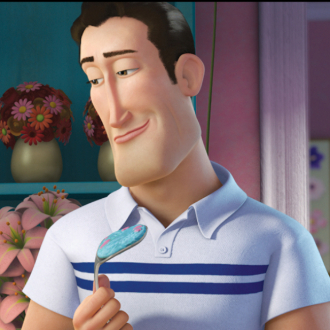

-
Barry B. Benson

Descrição
Barry B. Benson recém-formado, está desiludido com sua carreira: fazer mel. Em uma viagem fora da colméia, Barry é salvo por Vanessa. À medida que a relação floresce, descobre que os seres humanos comem mel, e posteriormente decide processá-los. "Mel de abelha. Nosso mel está sendo descaradamente roubado em grande escala!"
-
Vanessa Bloome

Descrição
Vanessa Bloome é uma florista de Nova York que é uma idealista com uma percepção única e clássica da humanidade e um amor por flores. Ela é uma das personagens principais de Bee Movie. "Ah! Isso é uma piada de abelha?"
-
Janet Benson E Martin Benson

Descrição
Janet Benson é esposa de Martin Benson, mãe de Barry e personagem coadjuvante em Bee Movie. "Não há voos dentro de casa!". "Que vida? Você não tem vida! Você não tem emprego! Você é apenas uma abelha!"
-
Adam Flayman

Descrição
Adam Flayman é o melhor amigo de Barry B. Benson, ele está muito animado para operar o krelman, e tenta evitar que Barry cometa erros. Mais tarde, ele se torna um advogado e representa a Bee Race em seu processo contra a humanidade."Você está voando para fora da colmeia. Você está falando com seres humanos que atacam nossas casas com lavadoras de alta pressão e M-80s. Isso é um oitavo de um pedaço de dinamite."
-
O Esquadrão Do Pólen

Descrição
The Pollen Jock conhecido como (O esquadrão do pólen) Pollen Jock é um trabalho arriscado que uma abelha pode fazer. O trabalho diz que você deve sair da colmeia e polinizar flores e também coletar néctar e trazê-lo de volta para a colmeia. Como Adam diz, você tem que ser criado para esse tipo de trabalho.
-
Ken
Descrição
Ken é alérgico a abelhas, então quando uma entra no apartamento de Vanessa, ele tenta matá-lo. Depois que Barry fez contato com ela e os dois desenvolveram uma amizade, ele começou a ver Barry manipulando Vanessa para fazê-la se afastar dele e tentou matar Barry uma segunda vez. "AQUELA ABELHA ESTÁ VIVENDO MINHA VIDA!!"